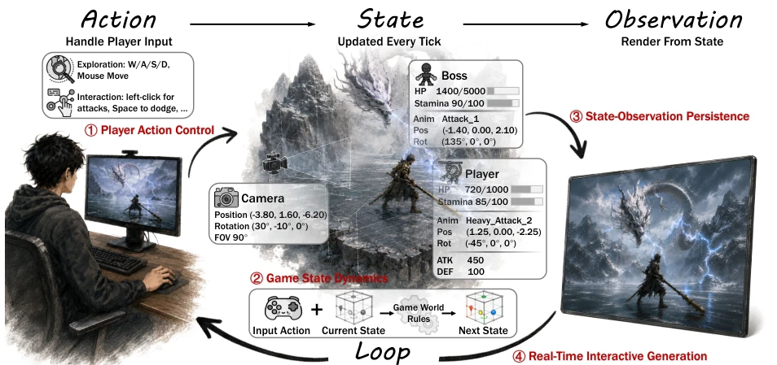

This paper pours cold water on the frenzied video generation world model community. The authors did not develop a new model, but instead brought back the game engine's "state machine" logic, pointing out that most current methods are merely "pixel hallucinations," with long-term consistency relying entirely on luck. Although they did not showcase capabilities, the dataset built for "Black Myth: Wukong" is substantial, and 90 hours of aligned data is too scarce in the industry. However, with only data and no model, the implementation of this framework depends on future work. It sharply pointed out the lack of state explicitation in existing works (such as Genie [4], Oasis [11]), emphasizing that rule constraints are more important than pixel prediction. This is not only a technical review but also a return to the essence of "game engines"; unfortunately, currently only the map is provided without the car, expecting subsequent models to truly run.
Building an interactive world that responds to player actions is a common goal of computer graphics and AI. Existing video generation models [3, 68] can predict future observations, but lack rule constraints, leading to long-term interaction inconsistency. Traditional game engines ensure logic through the Action-State-Observation loop, while existing world models [4, 11] mostly rely on implicit states, making it difficult to capture rules such as attack hits and health deduction. Existing datasets [6, 42] lack frame-level state annotations, limiting state-aware modeling. This paper aims to fill this gap, clarify the four dimensions of interactive worlds, solve the logic breakage caused by implicit states, provide a theoretical basis for next-generation game engines, and promote the paradigm shift from pixel prediction to state reasoning.
The core is reconstructing the "Action-State-Observation" loop. First, a four-dimensional analysis framework is proposed: Action Control (Geometry/Motor/Semantic), State Dynamics (Implicit/Potential/Explicit), State Observation Persistence (Storage/Estimation), Real-time Generation (Generation/Conditional Latency). Second, a data engine is constructed: targeting "Black Myth: Wukong", recording RGB/Depth maps via ReShade and OBS, the engine exports JSON states (health, position, etc.), and timestamps are manually aligned. Finally, Slot-Structured and semantic annotation are performed, converting numerical states into text understandable by language models, providing supervision for subsequent state-aware generation. This framework decouples video generation from game logic, emphasizes the core status of state in generation, and analyzes the technical trade-offs of each dimension in detail, providing guidance for subsequent model design.

Figure 1 Interactive game worlds as an action-state-observation loop. Player inputs update the internal game state according to game rules, and the resulting state is rendered into observations that continuously feed back to the player.
This paper has no new model evaluation, focusing on dataset construction and analysis. Collected 90 hours of "Black Myth: Wukong" Boss battle data, 1280x720@30FPS, containing frame-level keyboard/mouse input, engine ground truth states, and visual observations. Quality is ensured through anomaly frame filtering and temporal alignment. Analysis of existing methods reveals that implicit state models perform poorly in long-term consistency, while explicit states are good but data is scarce. This dataset provides a scarce "state-aware" benchmark for future research, supporting both Slot and semantic annotation forms. By comparing different state representations, the importance of explicit states for rule following is verified, laying a solid foundation for subsequent model training, filling the gap in AAA game state data, and demonstrating the scalability of the data engine.